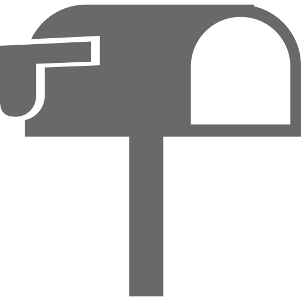

<ion-header>
  <ion-toolbar color="primary">
  <ion-navbar color="primary">
    <button ion-button menuToggle>
      <ion-icon name="menu"></ion-icon>
    </button>
    <ion-title>Poll</ion-title>
  </ion-navbar>
  </ion-toolbar>
</ion-header>
<ion-content class="csGrayBackground">
    <ion-list class="no-comment" *ngIf="EmptyPolls">
        
        <span>No Record Found</span>
    </ion-list>
  <ion-card class="csPoll" *ngFor="let res of resdata">
    <ion-card-header>
      <span>
        <div class="csParagraph"><b>{{res.question}}</b></div>
      </span>
    </ion-card-header>
    <ion-card-content>
      <ion-list radio-group [(ngModel)]="relationship" *ngFor="let d of res.subOptions">
          <ion-item>
            <ion-label>{{d.name}}</ion-label>
            <ion-radio *ngIf="res.optionTypeId == 1" ngmodel="choice1" checked (click)="PollChoiceClicked(d.id)"></ion-radio>
            <ion-checkbox *ngIf="res.optionTypeId == 2" [(ngModel)]="checkItems[d.id]" (click)="buttonEnable()"></ion-checkbox>
          </ion-item>
      </ion-list>
    </ion-card-content>
    <button full *ngIf="res.optionTypeId == 1" ion-button color="primary" style="margin-bottom:0px" [disabled]="enable" (click)="PollVoting(res.id,res)">Vote!</button>
    <button full *ngIf="res.optionTypeId == 2" ion-button color="primary" style="margin-bottom:0px" [disabled]="mul_enable" (click)="PollMulVoting(res.id,res)">Vote!</button>
  </ion-card>
</ion-content>